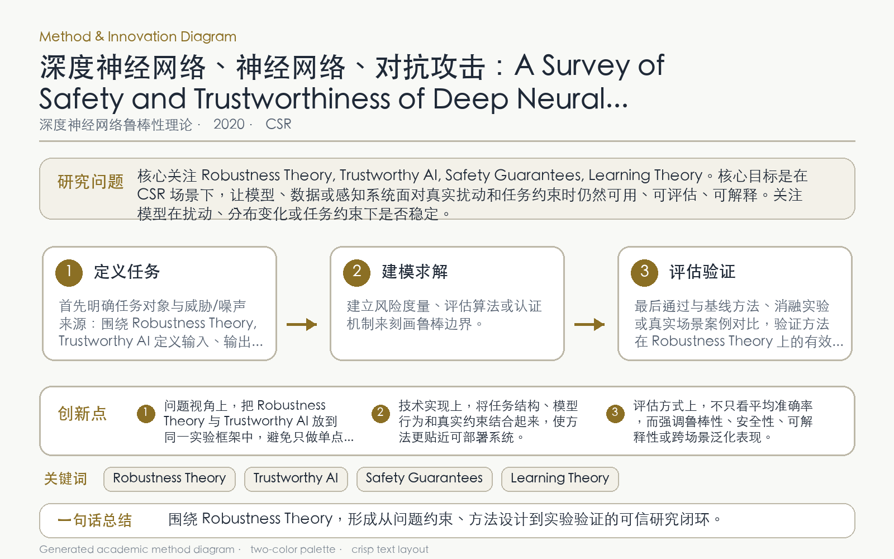

Problem
解决的问题
这篇论文属于“深度神经网络鲁棒性理论”方向，核心关注 Robustness Theory, Trustworthy AI, Safety Guarantees, Learning Theory。它要解决的不是单纯提升一个指标，而是在 CSR 场景下，让模型、数据或感知系统面对真实扰动和任务约束时仍然可用、可评估、可解释。关注模型在扰动、分布变化或任务约束下是否稳定。
Robustness Theory of DNNs · 2020 · CSR
A Survey of Safety and Trustworthiness of Deep Neural Networks Verification, Testing, Adversarial Attack and Defence, and Interpretability
Problem
这篇论文属于“深度神经网络鲁棒性理论”方向，核心关注 Robustness Theory, Trustworthy AI, Safety Guarantees, Learning Theory。它要解决的不是单纯提升一个指标，而是在 CSR 场景下，让模型、数据或感知系统面对真实扰动和任务约束时仍然可用、可评估、可解释。关注模型在扰动、分布变化或任务约束下是否稳定。
Value
用于展示时，这篇论文可以放在“问题定义 - 方法设计 - 证据评估”的链条中理解。它的价值在于把 Robustness Theory 具体化为一个可实验验证的研究问题，并通过 Computer Science Review（CCF C） 的发表形态呈现该方向的代表性进展。
Generated Method Diagram
该图基于论文标题、主题关键词与中文解读内容重新绘制，用统一的学术信息图风格概括研究问题、技术路线和创新点。相比原始 PDF 页面截图，它更适合网页展示和汇报讲解。
打开原文 PDF
Technical Route
Innovation